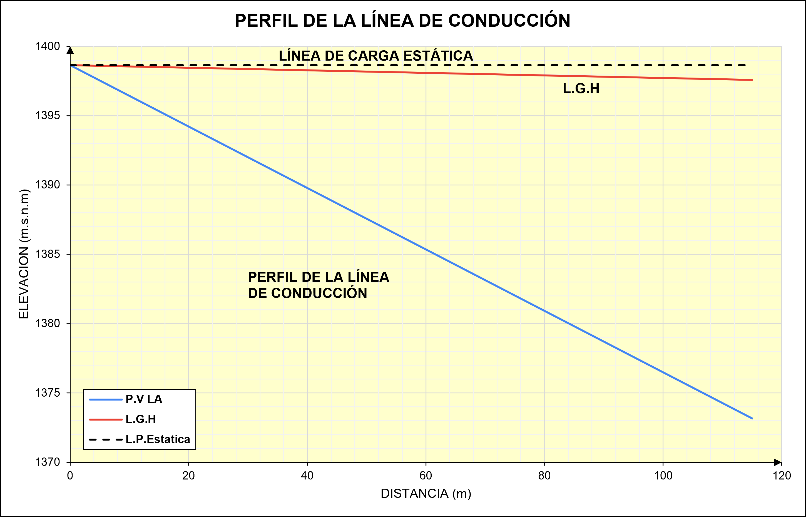

10. Diseño de la Línea de Aducción#
La línea de aducción transporta el agua desde el reservorio de almacenamiento hasta el inicio de la red de distribución. A diferencia de la línea de conducción, que se diseña con el Caudal Máximo Diario (\(Q_{md}\)), la aducción debe satisfacer la condición más exigente de consumo de la población, por lo que se dimensiona con el Caudal Máximo Horario (\(Q_{mh} = 23.64\) L/s). El tramo se resuelve con una única tubería de PVC, de corta longitud, que conduce el agua desde la cota de salida del reservorio (1398.641 m s. n. m.) hasta el punto de entrega a la red (1373.165 m s. n. m.).
10.1. Criterios de diseño#
Se aplican los mismos criterios normativos empleados en las líneas de conducción, evaluando la condición hidráulica bajo el caudal máximo horario:
1. Caudal de diseño (\(Q_{mh}\)). Corresponde al Caudal Máximo Horario, calculado a partir del caudal promedio diario afectado por el coeficiente \(K_2\):
2. Carga estática disponible (\(H_t\)). Diferencia entre la cota de salida del reservorio y la cota de entrega a la red:
3. Presión de diseño (\(P_d\)). Se afecta la carga estática por un factor de seguridad de 1.2, condición correspondiente al cierre total de válvulas (régimen estático):
4. Velocidades admisibles (RNE). \(V_{min} = 0.6\) m/s y \(V_{max} = 3.0\) m/s para PVC. El diámetro teórico se obtiene de la ecuación de continuidad:
5. Pérdida de carga (Hazen-Williams). Con coeficiente \(C = 150\) para PVC:
El diseño es satisfactorio cuando la pérdida de carga es menor que la carga disponible (\(h_{f} < H_{t}\)) y la velocidad se mantiene dentro del rango admisible.
10.2. Resumen de parámetros de diseño#
Parámetro |
Línea de Aducción (Reservorio → Red) |
|---|---|
Caudal de diseño, Qmh (L/s) |
23.64 |
Cota inicial (m s.n.m.) |
1398.641 |
Cota final (m s.n.m.) |
1373.165 |
Carga total disponible, Ht (m) |
25.48 |
Presión de diseño, Pd (mca) |
30.57 |
Presión de diseño (bar) |
3.12 |
Clase de tubería |
Clase 5 – Serie 20 (PN5) |
Diámetro adoptado |
6″ (152.4 mm) |
Coeficiente Hazen-Williams, C |
150 |
Longitud, L (m) |
115.00 |
Pérdida de carga, Hf (m) |
1.06 |
Velocidad, V (m/s) |
1.30 |
Tabla 10.1. Parámetros de diseño de la línea de aducción.
10.3. Descripción y cálculo hidráulico de la línea de aducción#
La línea de aducción transporta 23.64 L/s (Qmh) desde la cota 1 398.641 m s. n. m., a la salida del reservorio de almacenamiento, hasta la cota 1 373.165 m s. n. m., punto de entrega a la red de distribución, a lo largo de 115.00 m. La carga estática disponible es \(H_{t} = 25.48\) m, sensiblemente menor que la de las líneas de conducción, dado que se trata de un tramo corto dentro de la zona urbana. La presión de diseño resultante es \(P_{d} = 30.57\) mca (3.12 bar), por lo que se adopta tubería PVC clase 5 (PN5), la clase de menor presión nominal del sistema, acorde con la baja carga estática del tramo.
El rango de diámetros teóricos para las velocidades admisibles es de 3.94″ a 8.82″; se adopta el diámetro comercial 6″ (152.4 mm), coherente con el diámetro de la tubería de salida del reservorio predimensionado para este mismo caudal. Con \(C = 150\) y la longitud del trazo, la pérdida de carga resulta \(h_{f} = 1.06\) m, ampliamente inferior a la carga disponible, por lo que existe energía de sobra para entregar el agua a la red sin necesidad de rebombeo. La velocidad es \(V = 1.30\) m/s, dentro del rango admisible. La línea, por tanto, cumple.

Figura 10.1. Línea de Aducción — Perfil del terreno, línea de gradiente hidráulica (L.G.H.) y línea estática. La presión dinámica al punto de entrega (≈ 24.41 mca) se mantiene muy por debajo de la presión nominal de la tubería clase 5 (≈ 50 mca).
Al tratarse de un único tramo homogéneo (sin cambios de diámetro ni accesorios intermedios relevantes), la L.G.H. desciende de forma prácticamente lineal entre el nodo inicial (reservorio) y el nodo final (entrega a red), sin generar presiones negativas ni puntos críticos de sobrepresión a lo largo del recorrido.
10.4. Verificaciones#
Verificación |
Línea de Aducción |
|---|---|
Pérdida de carga: Hf < Ht |
1.06 < 25.48 ✓ |
Velocidad: 0.6 ≤ V ≤ 3.0 m/s |
1.30 m/s ✓ |
Presión dinámica máx. < presión nominal |
≈ 24.41 < 50 mca ✓ |
Tabla 10.2. Verificaciones hidráulicas de la línea de aducción.
El cálculo de la línea de gradiente hidráulica confirma que la presión dinámica en el punto de entrega a la red queda muy por debajo de la presión nominal de la clase de tubería seleccionada. La línea de aducción satisface simultáneamente las exigencias hidráulicas (energía suficiente y velocidad admisible) y estructurales (resistencia a la presión), garantizando la entrega del caudal máximo horario a la red de distribución bajo condiciones de operación seguras.